Dos arqueólogos estadounidenses acaban de armar un gran revuelo con una nueva teoría.
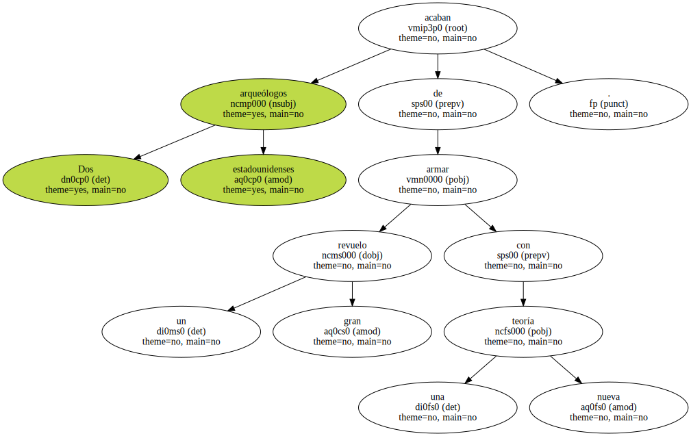Según sus investigaciones , los primeros pobladores de América llegaron por mar desde la Península Ibérica hace 18.000 años , casi 5.000 años antes de lo que se creía.
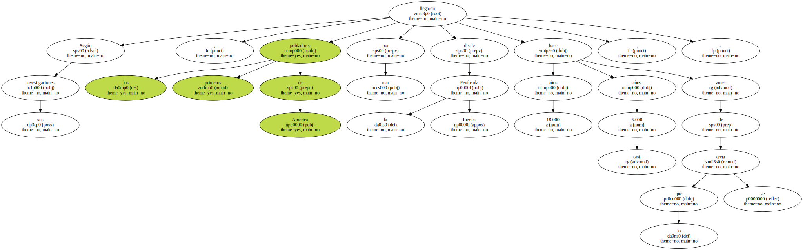Los primeros pobladores llegaron desde la Península Ibérica , según dos expertos.
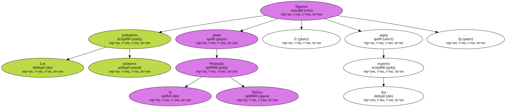Los primeros pobladores del continente americano podrían haber sido habitantes de la Península Ibérica que hace 18.000 años cruzaron el Atlántico y alcanzaron la costa Este de lo que hoy es EEUU.
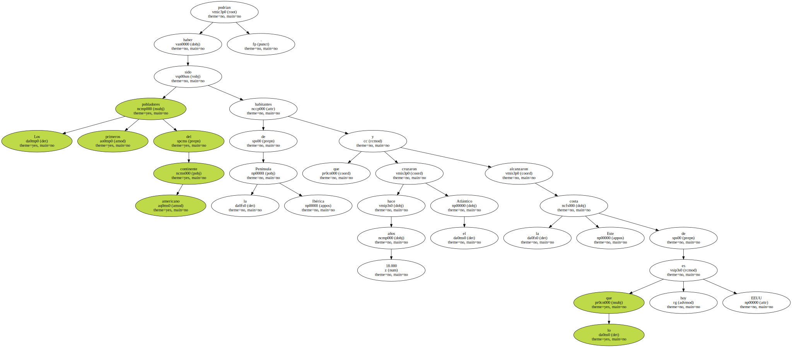Esta es la provocativa teoría de dos arqueólogos norteamericanos , en abierta contradicción con la generalmente aceptada de que América fue poblada hace 13.500 años por nómadas procedentes de Asia que entraron en ella por Alaska.
Dennis Stanford , comisario de Antropología de la prestigiosa Smithsonian Institution de Washington , y el arqueólogo independiente Bruce Bradley revolucionaron con su nueva teoría un congreso de arqueólogos celebrado este fin de semana en Santa Fe ( Nuevo México , EEUU ).
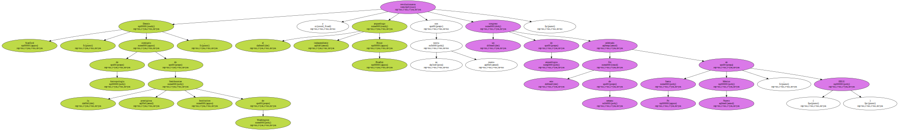Basándose en la comparación de puntas de lanza y otros restos hallados en Norteamérica y en la Península Ibérica , Stanford y Bradley afirman que los primeros pobladores de América pudieron ser solutrenses , que hace más de 18.000 años vivían en lo que hoy es España , Portugal y el sur de Francia.
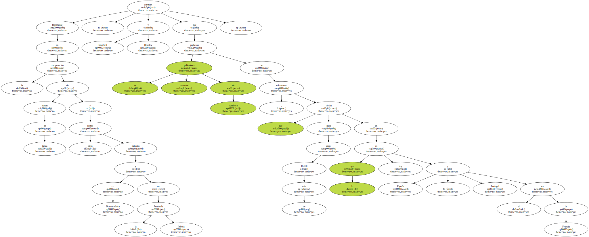No se sabe cómo cruzaron el Atlántico , pero según su conocimiento de culturas nativas del Artico , Stanford especula con que los solutrenses pudieron hacer la travesía en balsas fabricadas con pieles de animales porque , con buen tiempo y una corriente fuerte , la travesía hubiera podido hacerse en apenas un mes.
El arqueólogo recordó que los isleños del sur del Pacífico llevan navegando en mar abierto y con medios muy precarios más de 20.000 años.

Tras llegar a América y durante 6.000 años , los solutrenses se habrían extendido hacia los desiertos estadounidenses , la tundra canadiense y Suramérica , llevando con ellos su cultura de la caza.
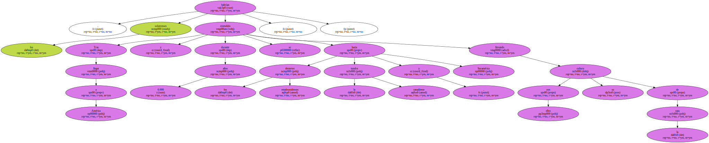La teoría hoy aceptada es que grupos nómadas cruzaron desde Siberia hasta Alaska por el estrecho de Bering , aprovechando que la última glaciación unió ambas costas con un puente de hielo.
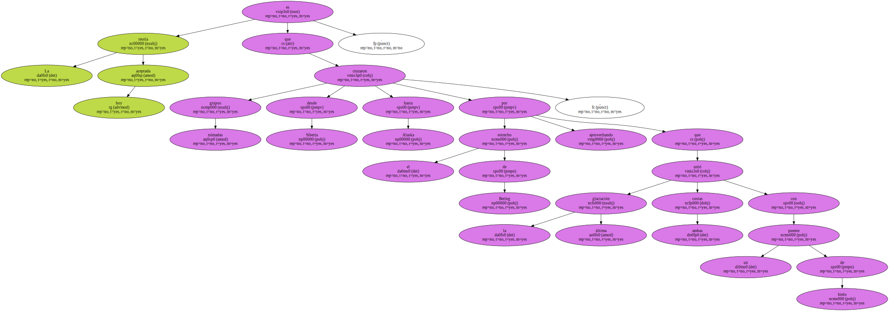Desde allí poblaron América dando pie a una cultura conocida como Clovis.
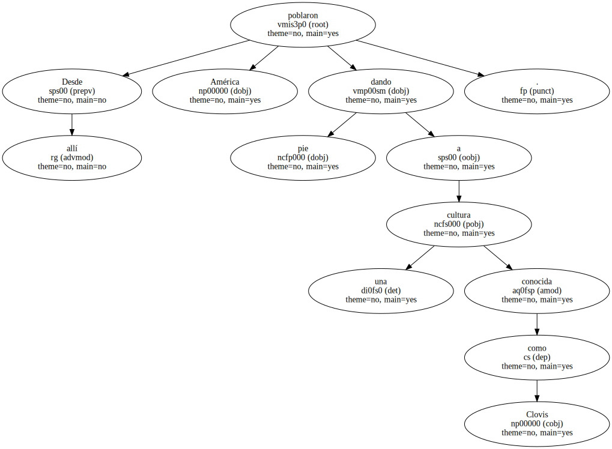Pero Stanford y Bradley sostienen que Clovis y Solutrea son casi idénticas.
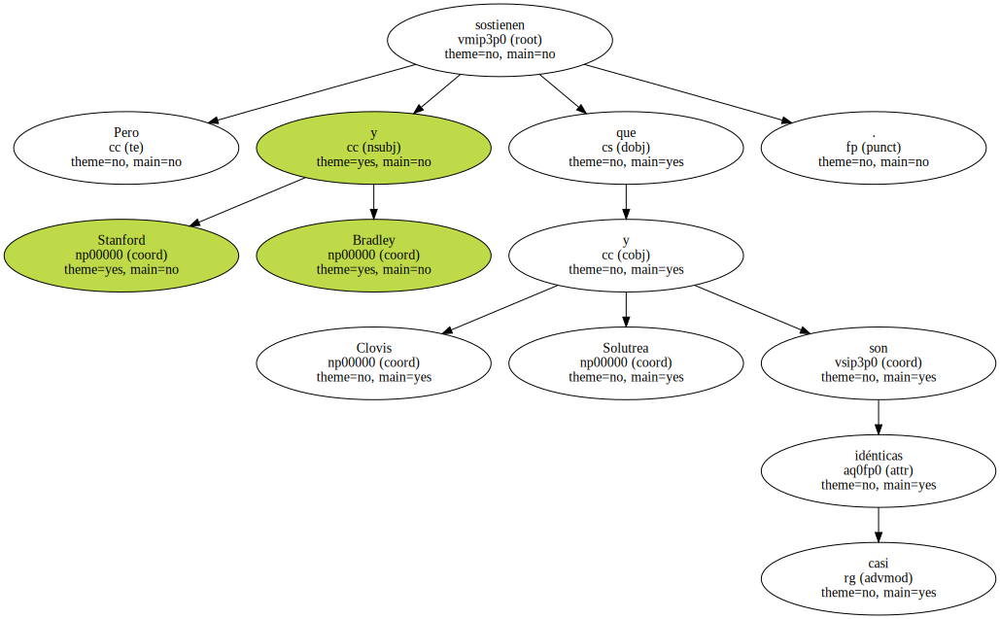" Sus puntas de lanza son imposibles de distinguir . No hay nada en Clovis que no esté en Solutrea " , dice Stanford.
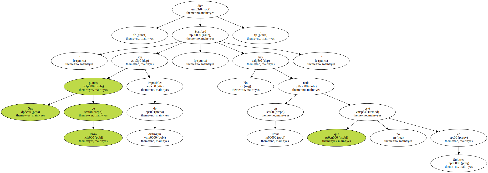La teoría de ambos arqueólogos tardará años en ser evaluada , pero no son los únicos que consideran superada la creencia de que los pobladores de América llegaron hace 13.500 años por Alaska , ya que se han detectado restos de hasta 16.000 años de antigüedad en Chile , Pensilvania , Virginia y Carolina del Sur.